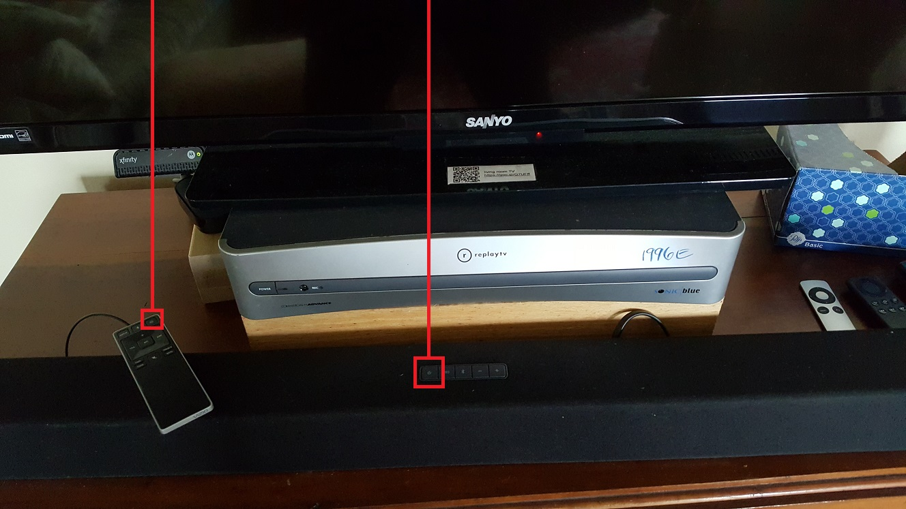

Turn on by pressing the power button either on the sound bar remote or on the sound bar itself:

When the television is turned off, the sound bar will notice this and turn itself off as well.
contact Nelson: nelson.sproul@gmail.com (209)677-7685
contact Deirdre: dvsproul@gmail.com (415)370-6422 Home